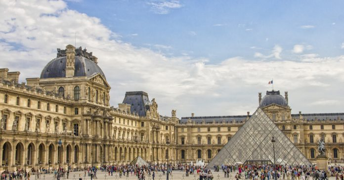

1. Eyfel Kulesi (Eiffel Tower):
Paris’in simgesi olan Eyfel Kulesi, Fransa’da mutlaka görülmesi gereken tarihi yerler arasında bulunuyor.
Yapı tam bir mimari harikadır ve 1889 senesinde Gustave Eiffel tarafından 8.000 metal parçanın kullanılmasıyla
ortaya çıkarılmıştır ve toplam ağırlığı 10 tondan fazladır. Oldukça zarif bir yapı olması nedeniyle kule, “Demir
Leydi” lakabına layık görülmüştür. Dünya Fuarı için geçici bir sergi olarak tasarlanmış olan kule, büyük ilgi görünce kalıcı olmasına
karar verilmiştir. Kuleden her ne kadar ilk etapta hoşlanmayanlar çoğunlukta olsa da şu anda Paris ile özdeşleşen en önemli yerdir ve 320
metre yüksekliği ile Paris’in birçok noktasından rahatlıkla görülebilmektedir

2. Nimes Arenası:
Nimes Arenası Fransa'nın Nîmes şehrinde bulunan Romalılardan kalma bir amfitiyatrodur. 1840 yılından beri
tarihi eser olarak sınıflandırılmıştır. İsa'dan sonra 60 yılında yapılmıştır.[1] Arena 4 bölüme ayrılmış 34
tribünde toplam 24000 izleyici barındırabilir. Amfitiyatro 133 metre eninde 110 metre boyunda 21 metre yüksekliğindedir.
Meydan ise 69 metreye eninde 38 metre boyundadır. Günümüzde hala konserler ve senede bir kez yapılan boğa güreşleri
için kullanılmaktadır.

3. Les Invalides
Les Invalides ya da Hôtel national des Invalides, Paris'te bulunan, içinde pek çok farklı yapı barındıran,büyük ölçüde Fransa'nın askeri tarihiyle ilintili olan bir anıttır. 24 Şubat 1670 tarihinde, XIV. Louis'nin
emriyle yapılmasına karar verilmiştir. Monarşinin savunması için canını verenlerin onuruna ve XIV. Louis
döneminde gazi olan, kanlarını akıtan askerlerin kalan günlerini sükûnet ve rahatlıkla geçirebilmeleri
gayesiyle inşa edilmiştir. Günümüzde de gazileri ağırlamaya devam eden anıt, askeri nekropol ve çok
sayıda müze dahil olmak üzere pek çok yapıya ev sahipliği yapmaktadır.
4. Pont Du Gard
Nimes yakınlarında bulunan Pont du Gard, MS 1. yüzyılda inşa edilmiş önemli bir Antik Roma köprüsüdür.Kemerli bir formdadır. Yaklaşık 49 metre yüksekliğe sahip olan köprü, şimdiye kadar Romalıların inşa
etmiş olduğu en yüksek köprü olma özelliğini taşımaktadır. Nimes şehrinin nüfusu 20.000’i aşınca şehrin
su ihtiyacını karşılamak için alternatif çözümler gerekli olmuştur. MS 40’tan itibaren 1000 kişilik bir
işçi ordusu ile Pont du Gard’ın inşasına başlanmıştır. Tamamlandıktan sonra MS 6. yüzyılda terk edilene
kadar aktif olarak kullanılmıştır.
5. Louvre Müzesi (LeMusée Du Louvre):
Louvre Müzesi, Geçmişte kraliyet ailesinin ikametgahı olarak kullanılan etkileyici bir sarayda bulunmaktadır.Burasını önemli kılan şeylerin başında ise Avrupa’nın en özel ve büyük güzel sanatlar koleksiyonlarından
birine ev sahipliği yapması geliyor. Müze ilk olarak 10 Ağustos 1793 senesinde kraliyet ailesine ait 500
civarındaki eserle ziyarete açılmıştır. Müzenin günümüzdeki binası, önündeki camdan yapılmış ikonik Mısır
piramidi ile dikkat çekmektedir. Leonardo Da Vinci’nin Mona Lisa’sı, Veronese’nin Cana’daki Düğün ve 1.
yüzyıldan kalma önemli eserlerden olan Venüs de Milo koleksiyonun nadide parçaları arasında bulunmaktadır.
Müzede toplamda 35.000’in üzerinde sanat eseri bulunmaktadır. Bu eserler içinde Mısır döneminden eserler,
İtalyan döneminden Rönesans eserleri ve İslam dönemine ait pek çok önemli eserler yer almaktadır.
Koleksiyonun zenginleşmesi, geçmişte imparatorların çeşitli anlaşmalar neticesinde eklenen parçalarla olmuştur.

6. Zafer Takı (Arc De Triomphe):
Paris’in ünlü caddesi Şanzelize’de bulunan Zafer Takı, 1806 senesinde I. Napolyon’un Austerlitz’deki zaferinikutlamak amacıyla yapılmaya başlanmıştır. Roma kemerlerinden esinlenilerek yapılan Zafer Takı’nın tamamlanması
ise 30 yıl sürmüştür. Tak’ı en önemli özelliği ise günümüzde 12 caddenin kesişim noktasında bulunmasıdır.
Hitler’in Fransa’ya geldiğinde görmek istediği ilk yerin burası olması ise Tak’ın siyasi açıdan ne denli
önemli olduğunu göstermektedir. Yapının yüksekliği 50 metre, uzunluğu 45 metre ve genişliği 22 metreyi
bulmaktadır. Anıtın tarihiyle ilgili bir de müze bulunmaktadır ve oldukça ilgi çekici bilgiler sunmaktadır.
Tak’ın hemen altında bulunan “Mechul Asker Türbesi” de burasını ilgi çekici kılan detaylardandır.

6. Mona Lisa:
1500’lü yılların başında Leonardo da Vinci tarafından resmedilen Mona Lisa, dünyanın en ünlü tablosu olabilir.Sanatçının tamamladığı ender eserlerden olan Mona Lisa, 1797 yılından beri Louvre Müzesi’nin himayesinde bulunuyor.
Fransa’nın ulusal miras listesinde de yer alan eserde resmedilen kadının ise Floransalı bir tüccarın eşi olan Lisa
Gherardini olduğuna inanılıyor. 1911 yılında bir müze çalışanı tarafından çalınmasının ardından kült statüsünü
güçlendiren eserin incelenmeyen tek noktası kalmamış bile olsa, gizemli havası etkisini hiç kaybetmiyor.

7: Liberty Leading the People
Eugène Delacroix'nın 1830’da gerçekleşen Temmuz İhtilali’ni ölümsüzleştirmek için yaptığı tablosuLiberty Leading the People, Louvre’un sahip olduğu en değerli eserlerden biri. Fransa’daki Bourbon
Hanedanı’nın hakimiyetini sona erdiren 3 günlük halk ayaklanmasını konu alan eser, yaşananların katı
gerçekliği ile Delocroix’nin romantik tarzını mükemmel bir biçimde buluşturuyor. Amerika’daki Özgürlük
Heykeli’nden Coldplay’in albüm kapağına kadar pek çok şeye ilham veren eser, 1874 yılından beri Louvre
Müzesi’nde sergileniyor.
8. İzlenim gün doğumu:
İzlenim: Gün Doğumu, (Fransızca: Impression, soleil levant) Claude Monet'nin izlenimcilik akımınaadını veren resmidir. İzlenim: Gün Doğumu, ilk kez 1874 yılında, Paris'teki La Salon Galerisi’nde
düzenlenen ilk izlenimcilik sergisinde sergilendi. Tabloda resmedilen manzaranın genel havası sislidir.
Sislerin arasından güneş ışığı etrafı aydınlatıyor. Monet bu temayı sonralar başka tablolarında da kullanmıştır.
Tablo Paris'te, Marmottan Monet Müzesi'nde sergilenmektedir.[2]